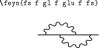
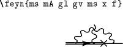

Feyn font
A package of fonts for displaying Feynman diagrams.
Version 0.4.1, 2017 November 03.
Persistent URL: http://purl.org/nxg/dist/feyn
This package is intended to produce relatively simple Feynman diagrams,
primarily for use within equations.
This package differs from Thorsten Ohl’s
feynmf/feynmp package (at CTAN,
or see the
TeX FAQ).
FeynMP works by creating Metafont or MetaPost figures using a
preprocessor. It’s more general than this package, but is at its best
when creating relatively large diagrams, for figures. In contrast,
the present system consists of a carefully-designed font with which
you can easily write simple diagrams, within equations or within text, in a
size matching the surrounding text size.
The propagators and vertices which are implemented are those which
seem to appear most often in non-figure displays (the practical
definition of ‘appear most often’ is ‘which I wanted’ and ‘which people
asked me for’). I have no current plans to extend the package
further, but I’m willing add other features if you can make a case for
them.
There is further documentation, plus numerous examples, in the
package documentation.
[By the way, I have little idea of how many people actually
use this package. If you do use it, I’d be most grateful if you could
drop me a line just to say so]
Licence
This software is copyright 1991, 1994, 2001-2, 2005, 2008-17, Norman Gray..
It is distributed under the terms of the 2-clause BSD Licence.
History
- Version 0.4.1, 2017 November 3
The package is now licensed under the terms of the 2-clause BSD licence.
The only other changes from v0.4b2 are mild documentation adjustments
(sorry for the long delay between 0.4b2 and 0.4).
Version 0.4 was not widely released.
- Version 0.4b3, 2013 April 12
- Changed
\below to \belowl, and added
companion \belowr.
- Documentation updates
- Version 0.4b2, 2011 April 9
 As
for version 0.4b1, but with the addition of
As
for version 0.4b1, but with the addition of aV for a
backward arrow (rarely used, but included for consistency; thanks to
Thomas Pruschke for the suggestion). Also added: flo for
the closed fermion loop, for phi^4 theory (plus floV and
floA for completeness; thanks to Hoang Nghia Nguyen for the suggestion;
the font should now be able to produce all scalar theory
diagrams).
- Version 0.4b1, 2010 January 23
Addition of the extended-size `feynx' fonts, and the \FEYN macro
(thanks to Luciano Pandola for the suggestion).
Adjustments to the sizing of half-loops
(the half-loops are now squashed, though the quarter-loops aren't).
Added ghost loops; we can now do all the diagrams of 2-loop QCD.
The quarter-loop gluons now taper at both ends, so that two quarter-loops
are no longer the same as one half-loop.
- ...
- Earlier release notes are available
Download and installation
The nominal distribution point for the Feyn package is CTAN,
under fonts/feyn.
The feyn package is included in the
TeXLive distribution, so
you may have it on your machine already. If not, or if you need a
more up-to-date version, read on.
Since the package is on CTAN, it should be easily installed and
updated using the tools which support this in your TeX distribution.
For TeXLive, that's tlmgr,
and for MikTeX see the
maintenance
section of the manual.
Doing the installation by hand
...how thoroughly old-skool of you!
- Download either
feyn-0.4.1.tar.gz
or
feyn-0.4.1.zip
and unpack it.
- Run LaTeX on the file
feyn.ins – this will unpack the
style file feyn.sty amongst other files. Place this
‘somewhere where TeX can find it’. Similarly, place the
.mf files somewhere where the font-generation mechanism
for your platform can find them. For example, in the TeXLive
distribution, the feyn *.mf files appear in the directory
/usr/local/texlive/2008/texmf-dist/fonts/source/public/feyn/
and the feyn.sty file in
/usr/local/texlive/2008/texmf-dist/tex/latex/feyn/feyn.sty,
so that if I were installing them ‘privately’, I would put them in
/usr/local/texlive/texmf-local/fonts/source/local/feyn/
and
/usr/local/texlive/texmf-local/tex/latex/feyn/feyn.sty.
With the teTeX and TeXLive Unix distributions, the output of
kpsepath mf shows the list of places where TeX will look
for Metafont source files. The font files should be
generated on the fly when you first refer to them. See also the
relevant discussion in the TeX FAQ about ‘where LaTeX can find them’.
- Run LaTeX on the file
feyn.dtx to obtain the
documentation, which is prebuilt in feyn.pdf (this should
generate the font files as a side-effect).
You should be able to find generic instructions for installing LaTeX files at
the TeX FAQ.